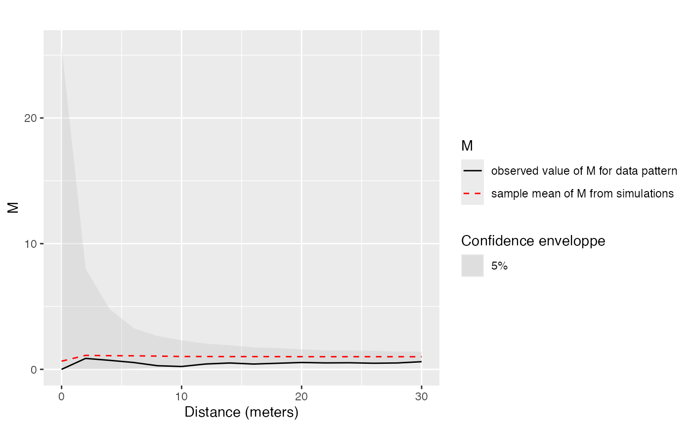

dbmss Package Reference
Distance-Based Measures of Spatial Structures
Source:vignettes/articles/reference.Rmd
reference.RmdThe dbmss package allows simple computation of spatial statistic functions of distance to characterize the spatial structures of mapped objects, including classical ones (Ripley’s K and others) and more recent ones used by spatial economists (Duranton and Overman’s , Marcon and Puech’s ). It relies on spatstat for some core calculation.
This vignette contains its reference guide.
Characterizing spatial distributions of objects concerns numerous researchers in various fields. Amongst many questions, ecologists have been addressing the spatial attraction between species (Duncan 1991) or the non-independence of the location of dead trees in a forest (Haase et al. 1997). Analyzing the spatial distribution of plants, economists may be concerned by the location of new entrants (Duranton and Overman 2008) or by the location of shops according to the types of good sold (Picone, Ridley, and Zandbergen 2009). In epidemiology, researchers want to identify the spatial distribution of sick individuals in comparison to the population (Diggle and Chetwynd 1991). In these fields of research, the point process theory undoubtedly helps dealing with these questions. Exploratory statistics of point patterns widely rely on Ripley’s seminal work (Ripley 1976, 1977), namely the function. A review of similar methods has been made by Marcon and Puech (2017) who called them distance-based measures of spatial concentration. We will write spatial structures here since both dispersion and concentration can be characterized. They are considered as novel and promising tools in spatial economics (Combes, Mayer, and Thisse 2008). The traditional approach to detect localization, i.e. the degree of dissimilarity between the geographical distribution of an industry and that of a reference (Hoover 1936), relies on discrete space (a country is divided in regions for example) and measures of inequality between zones, such as the classical Gini (1912) index or the more advanced Ellison and Glaeser (1997) index. This approach suffers several limitations, mainly the Modifiable Areal Unit Problem (MAUP): results depend on the way zones are delimited and on the scale of observation (Openshaw and Taylor 1979). Distance-based methods have the advantage to consider space as continuous, i.e. without any zoning, allowing detecting spatial structures at all scales simultaneously and solve MAUP issues.
These methods estimate the value of a function of distance to each point calculated on a planar point pattern, typically objects on a map. They all consist in counting neighbors (up to or exactly at the chosen distance) around each reference point and transform their number into a meaningful statistic. There are basically three possible approaches: just count neighbors, count neighbors per surface area or calculate the proportion of neighbors of interest among all neighbors. They define the three families of functions: absolute (how many neighbors are there?), topographic (how many neighbors per unit of area?) and relative (what is the ratio of neighbors of interest?). The function values are not the main motivation. The purpose is rather to test the point pattern against the null hypothesis that it is a realization of a known point process which does not integrate a property of interest. The basic purpose of Ripley’s is to test the observed point pattern against complete spatial randomness (CSR), i.e. a homogeneous Poisson process, to detect dependence between point locations (the null hypothesis supposes independent points) assuming homogeneity (i.e. the probability to find a point is the same everywhere). Ripley-like functions, available in the dbmss package, can be classified in three families:
- Topographic measures such as take space as their reference. They have been widely used in ecology (Fortin and Dale 2005). They have been built from the point process theory and have a strong mathematical background.
- Relative measures such as (Marcon and Puech 2010) compare the structure of a point type to that of another type (they can be considered as cases and controls). They have been developed in economics, where comparing the distribution of a sector of activity to that of the whole economic activity is a classical approach (Combes, Mayer, and Thisse 2008), but introduced only recently in ecology (Marcon, Puech, and Traissac 2012).
- Absolute functions such as (Duranton and Overman 2005) have no reference at all but their value can be compared to the appropriate null hypothesis to test it.
Relative and absolute functions have been built from descriptive statistics of point patterns, not related to the underlying point processes, so they are seen as heuristic and ignored by the statistical literature (Illian et al. 2008). Topographic functions are implemented in the spatstat package [Baddeley and Turner (2005)} but absolute and relative functions are missing. We fill this gap by proposing the dbmss package. It makes the computation of the whole set of distance-based methods simple for empirical researchers by introducing measures that are not available elsewhere and wrapping some topographic measures available in spatstat so that all can be used the same way.
Estimated values of the functions must be tested against a null hypothesis. The usual empirical way to characterize a spatial structure consists in computing the appropriate function and comparing it to the quantiles of a large number of simulations of the null hypothesis to reject (Kenkel 1988). We propose extended possibilities to evaluate confidence envelopes, including global envelopes (Duranton and Overman 2005), a goodness-of-fit test (Diggle 2013) and an analytic test (Lang and Marcon 2013; Marcon, Traissac, and Lang 2013).
Definitions of all functions and formulas for their estimation can be found in Marcon and Puech (2017) and are not repeated here, but they are summarized in the statistical background section. Their implementation is presented in the package content section.
Rationale and statistical background
We consider a map of points which often represents establishments in economic geography or trees in vegetation science. These points have two marks: a type (an industrial sector, a species…) and a weight (a number of employees, a basal area…). We want to apply to this point pattern a variety of exploratory statistics which are functions of distance between points, able to test the null hypothesis of independence between point locations. These functions are either topographic, absolute or relative. They can be interpreted as the ratio between the observed number of neighbors and the expected number of neighbors if points where located independently from each other. If reference and neighbor points are of the same type, the functions are univariate, to study concentration or dispersion. They are bivariate if the types differ, to address the colocation of types. We detail this approach below.
Topographic, homogeneous functions
Topographic, homogeneous functions are Ripley’s and its derivative . Their null hypothesis is a Poisson homogeneous process: rejecting it means that the process underlying the observed pattern is either not homogeneous or not independent. These functions are applied when homogeneity is assumed so independence only is tested by comparing the observed values of the function to their confidence envelope under CSR. Bivariate functions are tested against the null hypothesis of random labeling (points locations are kept unchanged but marks are redistributed randomly) or population independence (the reference point type is kept unchanged, the neighbor point type is shifted) following Goreaud and Pélissier (2003). The random labeling hypothesis considers that points preexist and their marks are the result of a process to test (e.g. are dead trees independently distributed in a forest?). The population independence one considers that points belong to two different populations with their own spatial structure and wants to test whether they are independent from each other.
Edge effect correction is compulsory to compute topographic functions: points located close to boundaries have less neighbors because of the lack of knowledge outside the observation window. The spatstat package provides corrections following Ripley (1988), we use them.
Topographic, inhomogeneous functions
(Baddeley, Møller, and Waagepetersen 2000) is the generalization of to inhomogeneous processes: it tests independence of points assuming the intensity of the process is known. Empirically, it generally has to be estimated from the data after assumptions on the way to do it relying on the theoretical knowledge of the process. The null hypothesis (random position) is that the pattern comes from an inhomogeneous Poisson process of this intensity, which can be simulated. Applying to a single point type allows using the random location null hypothesis, following Duranton and Overman (2005): observed points (with their marks) are shuffled among observed locations to test for independence. Bivariate null hypotheses may be random labeling or population independence as defined by Marcon and Puech (2010): reference points are kept unchanged, other points are redistributed across observed locations.
(Penttinen 2006; Penttinen, Stoyan, and Henttonen 1992) generalizes to weighted points (weights are continuous marks of the points). Its null hypothesis in dbmss is random location. Penttinen, Stoyan, and Henttonen (1992) inferred the point process from the point pattern, and used the inferred process to simulate the null hypothesis patterns. This requires advanced spatial statistics techniques and knowledge about the process that is generally not available. The random location hypothesis is a way to draw null patterns simply, but ignoring the stochasticity of the point process.
The (Diggle and Chetwynd 1991) function compares the function of points of interest (cases) to that of other points (controls). Its null hypothesis is random labeling.
Absolute functions
In their seminal paper, Duranton and Overman (Duranton and Overman 2005) study the distribution of industrial establishments in Great Britain. Every establishment, represented by a point, is characterized by its position (geographic coordinates), its sector of activity (point type) and its number of employees (point weight). The function (Duranton and Overman 2005) is the probability density to find a neighbor a given distance apart from a point of interest in a finite point process. The function integrates the weights of points: it is the density probability to find an employee apart from an employee of interest.
and are absolute measures since their value is not normalized by the measure of space or any other reference: for a binomial process, increases proportionally to if the window is large enough to ignore edge effects (the probability density is proportional to the perimeter of the circle of radius , Bonneu and Thomas-Agnan 2015), then edge effects make it decrease to 0 when becomes larger than the window’s size: it is a bell-shaped curve. values are not interpreted but compared to the confidence envelope of the null hypothesis, which is random location. Bivariate functions null hypotheses are random labeling, following Duranton and Overman (2005), i.e. point types are redistributed across locations while weights are kept unchanged, or population independence (as for ). It is not corrected for edge effects. was designed to characterize the spatial structure of an economic sector, comparing it to the distribution of the whole activity. From this point of view, it has been considered as a relative function Marcon and Puech (2010). We prefer to be more accurate and distinguish it from strict relative functions which directly calculate a ratio or a difference between the number of points of the type of interest and the total number of points. What makes it relative is only its null hypothesis: changing it for random location (that of univariate ) would make univariate behave as a topographic function (testing independence of the distribution supposing its intensity is that of the whole activity).
is a leading tool in spatial economics. A great number of its applications can be found in the literature that confirms the recent interest for distance-based methods in spatial economics. A recent major study can be found in Ellison, Glaeser, and Kerr (2010).
Relative functions
The univariate and bivariate function (Marcon and Puech 2010) are the ratio of neighbors of interest up to distance normalized by its value over the whole domain. Their null hypotheses are the same as ’s. They do not suffer edge effects. Marcon and Puech (2010) show that the function respect most of the axioms generally accepted as the good properties to evaluate geographic concentration in spatial economics (Combes and Overman 2004; Duranton and Overman 2005).
(Lang, Marcon, and Puech 2020) is the density function measuring the same ratio as , at distance .
Unification
Empirically, all estimators can be seen as variations in a unique framework: neighbors of each reference point are counted, their number is averaged and divided by a reference measure. Last, this average local result is divided by its reference value, calculated over the whole point pattern instead of around each point.
Choosing reference and neighbor point types allows defining univariate or bivariate functions, counting neighbors up to or at a distance defines cumulative or density functions, taking an area or a number of points as the reference measure defines topographic or relative functions. These steps are detailed for two functions to clarify them: we focus on Ripley’s and Marcon and Puech’s bivariate function. See Marcon and Puech (2017) for a full review.
Reference points are denoted , neighbor points are . For density functions such as , neighbors of are counted at a chosen distance :
is a kernel estimator, necessary to evaluate the number of neighbors at distance , and is an edge-effect correction (points located close to boundaries have less neighbors because of the lack of knowledge outside the observation window).
To compute the bivariate function, reference points are of a particular type in a marked point pattern: , where is the set of points of the reference type. Neighbors of the chosen type are denoted . In cumulative functions such as , neighbors are counted up to :
Points can be weighted, is the neighbor’s weight.
The number of neighbors is averaged then. is the number of reference points:
The average number of neighbors is compared to a reference measure. It may be a measure of space (the perimeter of the circle of radius for ), defining topographic functions:
It may also be the average number of neighbors of all types in a relative function such as :
Finally, is compared to the same ratio computed on the whole window. For :
is the area of the window, and are the limit values of and when gets larger than the window’s size. For , it comes:
is the total weight of neighbor points, that of all points. Finally, despite the functions are quite different (density vs. cumulative, topographic vs. relative, univariate vs. bivariate), both estimators can be written as . Their value (except for absolute functions) can be interpreted as a location quotient: or means than twice more neighbors are observed at (or up to) distance than expected on average, i.e. ignoring the point locations in the window. The appropriate function will be chosen among the toolbox according to the question raised.
Package content
The dbmss package contains a full (within the limits of the literature reviewed in section 2) set of functions to characterize the spatial structure of a point pattern, including tools to compute the confidence interval of the counterfactual. It allows addressing big datasets thanks to C++ code used to calculate distances between pairs of points (using Rcpp and RcppParallel infrastructure: Eddelbuettel and François 2011; Allaire et al. 2023). Computational requirements actually are an issue starting from say 10,000 points (see Ellison, Glaeser, and Kerr 2010 for instance). Memory requirement is , i.e. proportional to the number of points to store their location and type. We use loops to calculate distances and increment summary statistics rather than store a distance matrix which is , following Scholl and Brenner (2015). Computation time is because pair distances must be calculated.
We consider planar points patterns (sets of points in a 2-dimensional
space) with marks of a special kind: each point comes with a continuous
mark (its weight) and a discrete one (its type). We call this special
type of point pattern weighted, marked, planar point patterns
and define objects of class wmppp, which derives from
ppp class as defined in spatstat. Marks are a
dataframe with two columns, PointWeight containing the
weights of points, and PointTypes containing the types, as
factors.
A wmppp object can be created by the
wmppp() function which accepts a dataframe as argument, or
converted from a ppp object by as.wmppp().
Starting from a csv file containing point coordinates, their type and
their weight in four columns, a wmppp object can be created
by just reading the file with read.csv() and applying
wmppp() to the result. Options are available to specify the
observation window or guess it from the point coordinates and set
default weights or types to points when they are not in the dataframe,
see the package help for details. The simplest code to create a
wmppp with 100 points is as follows. It draws point
coordinates between 0 and 1, and creates a wmppp with a
default window, all points are of the same type named All and
their weight is 1.
## Loading required package: Rcpp## Loading required package: spatstat.explore## Loading required package: spatstat.data## Loading required package: spatstat.univar## spatstat.univar 3.1-1## Loading required package: spatstat.geom## spatstat.geom 3.3-5## Loading required package: spatstat.random## spatstat.random 3.3-2## Loading required package: nlme## spatstat.explore 3.3-4
Pattern <- wmppp(data.frame(X = runif(100), Y = runif(100)))
summary(Pattern)## Marked planar point pattern: 100 points
## Average intensity 102.9038 points per square unit
##
## Coordinates are given to 16 decimal places
##
## Mark variables: PointWeight, PointType
## Summary:
## PointWeight PointType
## Min. :1 All:100
## 1st Qu.:1
## Median :1
## Mean :1
## 3rd Qu.:1
## Max. :1
##
## Window: rectangle = [0.004359, 0.9922431] x [0.0029645, 0.9866648] units
## (0.9879 x 0.9837 units)
## Window area = 0.971782 square unitsDistance-based functions
All functions are named Xhat where X is the
name of the function:
- Ripley’s and , and ’s normalization, Besag’s (1977);
- Penttinen’s and ;
- Diggle and Chetwynd’s ;
- Baddeley et al.’s and its derivative ;
- Marcon and Puech’s ;
- Duranton and Overman’s (including its weighted version ).
The suffix hat has been used to avoid confusion with
other functions in R: D exists in the stats
package for example.
Arguments are:
- A weighted, marked planar point pattern (a
wmpppclass object). The window can be a polygon or a binary image, as in spatstat. - A vector of distances.
- Optionally a reference and a neighbor point type to calculate bivariate functions, or equivalently the types of cases and controls for the function.
- Some optional arguments, specific to some functions.
Topographic functions require edge-effect corrections, provided by
spatstat: the best correction is systematically
used. Relative functions ignore the window. Technical details are
provided in help files.
These functions return an fv object, as defined in
spatstat, which can be plotted.
Confidence envelopes
The classical confidence intervals, calculated by Monte-Carlo
simulations (Kenkel 1988) are obtained by
the XEnvelope functions, where X is the
function’s name. Arguments are the number of simulations to run, the
risk level, those of the function and the null hypothesis to simulate.
These functions return a dbmssEnvelope object which can be
plotted.
Null hypotheses have been discussed by Goreaud and Pélissier (2003) for topographic functions such as and by Marcon and Puech (2010) for relative functions. The null hypothesis for univariate functions is random position (points are drawn in a Poisson process for topographic functions) or random location (points are redistributed across actual locations for relative functions). Bivariate functions support random labeling and population independence null hypotheses. The possible values of arguments are detailed in the help file of each function.
Building a confidence envelope this way is problematic because the
test is repeated at each distance. The underestimation of the risk has
been discussed by Loosmore and Ford
(2006). Duranton and Overman (2005)
proposed a global envelope computed by the repeated elimination of
simulations reaching an extreme value at any distance until the desired
level is reached. The argument Global = TRUE is used to
obtain it instead of the local one.
Examples
We illustrate the main features of the package by two examples. The first one comes from the economic literature (Bonneu 2007) 1
load("CSBIGS.Rdata")
Category <- cut(
Emergencies$M,
quantile(Emergencies$M, probs = c(0, 0.9, 1)),
labels = c("Other", "Biggest"),
include.lowest = TRUE
)
X <- wmppp(
data.frame(X = Emergencies$X, Y = Emergencies$Y, PointType = Category),
win = Region
)
X$window$units <- c("meter","meters")
X2 <- split(X)
marks(X2$Other) <- rep(1, X2$Other$n)
marks(X2$Biggest) <- rep(1, X2$Biggest$n)
par(mfrow = c(1, 2), mar = c(0, 0, 0, 0))
plot(X2$Other, main = "", maxsize = 1, legend = FALSE)
text(514300, 1826800, "a")
plot(X2$Biggest, main = "", maxsize = 1, legend = FALSE)
text(514300, 1826800, "b")The map of emergencies in the urban area of Toulouse, France, during year 2004 (about 33 km from south to north) shows (a) 20,820 emergencies recorded (many points are confused at the figure scale) and (b) the locations of the 10 percent most serious ones. The workload associated to each emergency (the number of men hours it required) is known. The original study tested the dependence between workload and location of emergencies: it did not exclude the null hypothesis of random labeling. We have a complementary approach here: we consider the 10 percent more serious emergencies, i.e. those which caused the highest workload. may detect concentration (or dispersion) if, at a distance from a serious emergency, the probability to find another serious emergency is greater (or lower) than that of finding an emergency whatever its workload:
The Emergencies data frame contains point coordinates
(in meters) in columns X and Y and workload in
column M. The second line of the code creates a vector
containing a factor describing the workload to separate its 10% higher
values. A wmppp object is created then, containing the
points and their mark. The KdEnvelope function is run from
0 to 10km by steps of 100m for the most serious emergencies. The figure
below shows that the 10% most serious emergencies are more dispersed
than the distribution of all emergencies at all distances up to
10km.
KdE <- KdEnvelope(
X,
r = seq(0, 10000, 100),
NumberOfSimulations = 1000,
ReferenceType = "Biggest",
Global = TRUE
)
autoplot(KdE, main = "")
The solid, black curve is . The dotted red curve is the average simulated value and the shaded area is the confidence envelope under the null hypothesis of random location. The risk level is 5%, 1000 simulations have been run. distances are in meters.
This opens the way to discuss on the optimal location of fire stations.
The second example uses the paracou16 point pattern
provided in the package. It represents the distribution of trees in a
4.1-ha tropical forest plot in the Paracou field station in French
Guiana (Gourlet-Fleury, Guehl, and Laroussinie
2004). It contains 2426 trees, whose species is either Qualea
rosea, Vouacapoua americana or Other (one of more than 300
species). Weights are basal areas (the area of the stems virtually cut
1.3 meter above ground), measured in square centimeters.
autoplot(
paracou16,
labelSize = expression("Basal area (" ~cm^2~ ")"),
labelColor = "Species"
)On the map, circles are centered on trees in the forest plot (the containing rectangle is 200m wide by 250m long). Circle sizes are proportional to the basal areas of trees.
The question to test is dependence between the distributions of the two species of interest. Bivariate is calculated for between 0 and 30 meters. 1000 simulations are run to build the global confidence envelope.
Envelope <- MEnvelope(
paracou16,
r = seq(0, 30, 2),
NumberOfSimulations = 1000,
Alpha = 0.05,
ReferenceType = "V. Americana",
NeighborType = "Q. Rosea",
SimulationType = "RandomLabeling",
Global = TRUE
)
autoplot(Envelope, main = "", ylim = c(0, 20))
values of Qualea rosea around Vouacapoua Americana are plotted. The solid, black curve is . The dotted red curve is the average simulated value. The shaded area is the confidence envelope. is expected if points are independently distributed. The risk level is 5%, 1000 simulations have been run. Distances are in meters.
The calculated function is , showing the repulsion between V. Americana and Q. rosea up to 30 m. Significance is unclear, since the observed values of the function are very close to the lower bound of the envelope. The complete study, with a larger dataset allowing significant results, can be found in Marcon, Puech, and Traissac (2012).
Goodness-of-fit test
A Goodness-of-fit test for
has been proposed by Diggle (2013),
applied to
by Loosmore and Ford (2006) and to
by Marcon, Puech, and Traissac (2012). It
calculates the distance between the actual values of the function and
its average value obtained in simulations of the null hypothesis. The
same distance is calculated for each simulated point pattern, and the
returned
-value
of the test if the ratio of simulations whose distance is larger than
that of the real point pattern. The test is performed by the
GoFtest function whose argument is the envelope previously
calculated (actually, the function uses the simulation values).
Applied to the example of Paracou trees, the -value is:
GoFtest(Envelope)## [1] 0.267Ktest
The Ktest has been developed by Lang and Marcon (Lang and Marcon 2013; Marcon, Traissac, and Lang
2013). It does not rely on simulations and returns the
-value
to erroneously reject complete spatial randomness (CSR) given the values
of
.
It relies on the exact variance of
calculated with edge-effect corrections. It only works in a rectangular
window.
The following example tests a 1.5-ha subset of paracou16
(100m by 150m, origin at the southwestern corner).
data("paracou16")
RectWindow <- owin(c(300, 400), c(0, 150))
X <- paracou16[RectWindow]
(pKtest <- Ktest(X, seq(5, 50, 5)))## [1] 0.002682576It rejects CSR (p=0.0027).